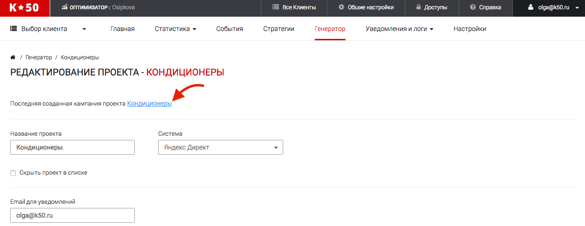
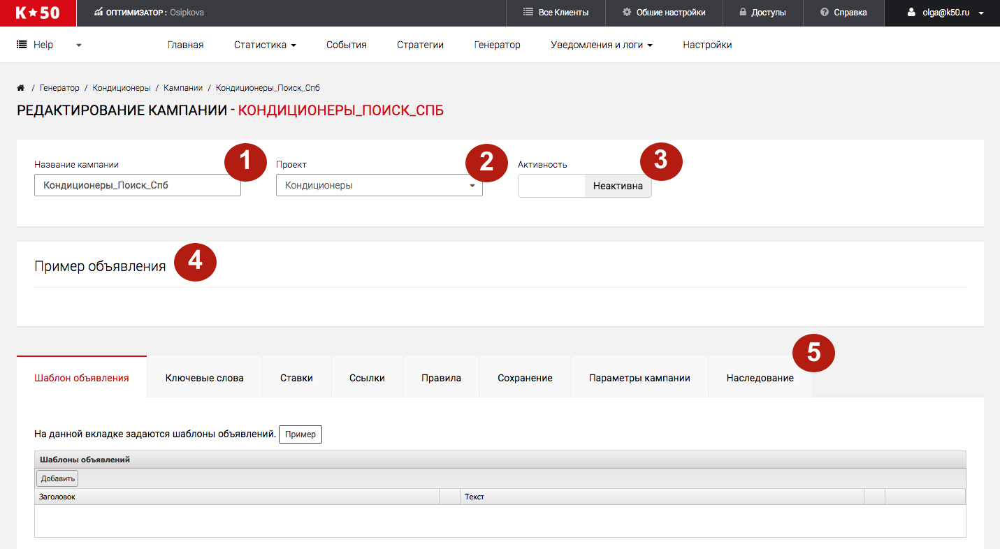
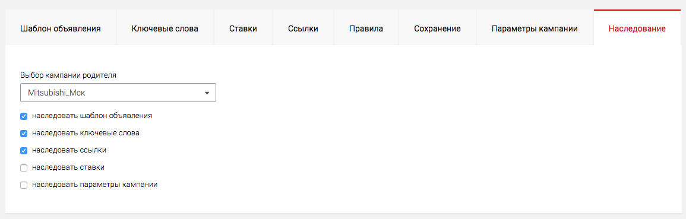

В данный момент сервисы К50:Генератор в процессе переезда на новый дизайн. Данная статья актуальна не для всех клиентов. Если вы не нашли ответ на свой вопрос, обратитесь к старой справке
Первая кампания

После создания проекта проще всего попасть в первую кампанию, перейдя по ее названию вверху страницы

В этом поле можно переименовать кампанию.
Указывается проект, в котором находится данная кампания. При выборе другого проекта и сохранении кампании, кампания будет перенесена в выбранный проект.
По умолчанию, новая кампания неактивна. Это значит, что она не будет загружена в рекламную систему и не будет обновляться.
По умолчанию, кампания не имеет примера объявления. Пример объявления появится после того, как вы добавите шаблоны для ключевых слов и текстов и другие обязательные параметры.
Все кампании в К50:Генератор имеют рабочие вкладки. Подробнее о каждой можно прочитать в соответствующем разделе "Работа с кампанией":
- Шаблоны объявлений
- Ключевые слова
- Ставки
- Правила
- Сохранение
- Параметры кампании
- Наследование
Категорийная кампания
Категорийные кампании — объявления в которых создаются не по товарам, а по категориям товаров.
Понятие "Категорийный фид" подразумевает использование фида, который можно применять для создания объявлений по категориям. К сожалению, не все товарные фиды для этого подходят. Способы создания подходящих фидов:
Способ 1. Исходник — товарный YML-фид. Способ — через склейку по категориям.
В Генераторе вам нужно сделать следующее:
- создать новый проект
- указать ссылку на товарный фид и сохранить проект
- поставить галочку "Фильтрация фида" в настройках проекта и задать следующий фильтр:
Склеиваем по тегам - categoryid
Алгоритм - Взять наименьшее
Фильтруемый тег - price
Подготовка YML-файла. Если вам для объявлений достаточно тегов по умолчанию, то можете в фиде ничего не менять. Если же для категорий вы хотите использовать какие-то дополнительные теги, то их нужно прописать для каждого товара, относящегося к определенной категории. Лучше настроить это в автоматическом режиме и для всех товаров из категории, чтобы, если товар пропал из фида, вместе с ним не пропали дополнительные теги для этой категории. Пример оформления дополнительных тегов.
<param name="key_words">ключ 1, ключ 2, ключ 3</param>
<param name="category_url">http://url.ru/product/</param>
Суть этого способа в том, что после склейки остается только по одному товару из каждой категории, и уже на основании тегов для этого товара вы можете формировать объявления.
Способ 2 Создать категорийный фид, на базе товарного, но убрав из него лишние товары.
По сути отличается от описанного выше только тем, что не требует склейки в настройках проекта. Здесь важно соблюдать структуру и набор обязательных тегов для YML-фидов.
Способ 3 CSV-файл. Для каждой категории задается свой уникальный числовой id. Остальной набор тегов может быть указан в произвольном порядке.
Дополнительные комментарии:
- cat_id (category_id) - id категории (у каждой категории он свой)
- parent_id - id родительской категории
- Также приветствуются дополнительные поля с агрегированной информацией (средняя цена, число товаров в наличии и др.)
Это наиболее простой способ, если нужно работать с категориями товаров.
Способ 4 Создать таблицу в интерфейсе. Принцип тот же, что и при формировании CSV файла: вы формируете таблицу исходя из нужных вам тегов, которые потом будут использованы в шаблонах для объявлений.
Дочерняя кампания
Дочерняя кампания - это копия кампании, изменения в которой синхронизированы с изменениями в родительской кампании. То есть при редактировании родительской кампании (шаблонов объявлений, ключевых слов, ссылок и т.д.) будет изменяться и содержимое дочерних кампаний.
Дочерние кампании для Яндекс.Директ создаются на уровне списка кампаний проекта
-
Для создания дочерней кампании выберите “создать дочернюю” напротив кампании, которую хотите считать родительской.
-
После нажатия кнопки “создать дочернюю”, вы попадете на страницу редактирования дочерней кампании.
-
По умолчанию все вкладки не активны для редактирования, это значит что в зависимости от изменений в родительской кампании будут изменяться и все настройки и шаблоны в дочерних. Если вы хотите чтобы некоторые вкладки оставались неизменны при редактировании родительской кампании или, если нужны индивидуальные настройки, то снимите галочки с данных вкладок и внесите изменения.
Дочерние кампании для Google Adwords создаются на уровне редактирования кампании на вкладке "Наследование"

- Для создания дочерней кампании выберите из списка кампанию, которую нужно считать родительской
- Отметьте галочками пункты, которые дочерняя будет заимствовать у родительской. По умолчанию все вкладки выбраны в качестве заимствованных, это значит что в зависимости от изменений в родительской кампании будут изменяться и все настройки и шаблоны в дочерних.
- Перейдите в дочернюю кампаниюю и исправьте вкладки, которые не были выбраны для заимствования
Пример использования дочерней кампании:
Интернет-магазин размещает контекстную рекламу в двух регионах: Москва и Петербург.
Нам необходимо, чтобы тексты объявлений и ключевые слова оставались одинаковыми в рекламе на все регионы, а ставки и настройки геотаргетинга различались. Тогда при создании дочерней кампаний,мы снимем галочки с
вкладок "Ставки" и "Параметры кампании", что бы в дальнейшем изменять их вручную.